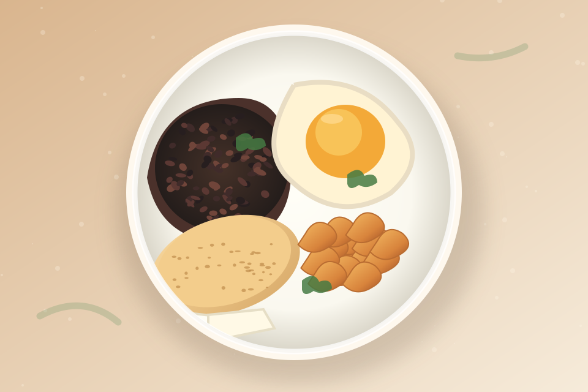

EL MENÚ DE HOY
Comer rico, sentirse bien.
Sabores de Oriente, porciones pensadas para dos y recetas que caben en la rutina de la semana.
👨 Referencia: 146 g/día👩 Referencia: 122 g/día*

Sabores de Oriente, porciones pensadas para dos y recetas que caben en la rutina de la semana.

Toca cualquier plato: ahora tiene ingredientes medidos, recados, hierbas, tiempos y pasos de cocina.
El desayuno y la cena son muy parecidos todos los días; variamos principalmente el almuerzo.
Los ingredientes son para dos personas. Cada salsa, recado y base está desglosado; toca la receta para ver los pasos.
Calculada de las recetas: incluye tomates del recado, ensaladas, hierbas, ajo y verduras. Compra sugerida con una pequeña reserva.
Calculando compras…
Recetas base completas con medidas, pasos, conservación y distribución en recipientes para los horarios de ambos.
Marca las tareas terminadas
Los mismos ingredientes con cantidades adaptadas. Las referencias de proteína no son objetivos clínicos definitivos. Esta versión retira lentejas y garbanzos y modera los carbohidratos de las guarniciones.
Cálculo inicial mediante la fórmula de 1.5 g/kg. Conviene revisar porciones y metas con nutrición y medicina para ajustarlas de forma segura.
Cálculo inicial mediante la fórmula de 1.5 g/kg. Es solo una referencia matemática: la meta definitiva depende de salud, actividad y objetivos.
Los procedimientos están adaptados a porciones de dos personas y preferencias de esta casa; no reproducen literalmente las recetas consultadas.